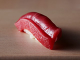

James is offering you
one of the hardest reservations in Tokyo.
6 seats. One chef.
The philosophy of a lifetime.
"We receive the lives nurtured by the earth.
Every piece of sushi is a conversation
between the sea, the soil, and the hand."
Chef Nishioka has spent decades tracing ingredients to their source — the farmers, the fishermen, the makers of each vessel on the counter. At Sushi Nishioka, the omakase is not a menu. It is a philosophy, assembled fresh each day from what the land offers.
Six counter seats. Complete silence in the kitchen. A subterranean room beneath Takanawa Gateway, where the city disappears and the meal becomes everything.
Today's Omakase — A glimpse

鮪
As a guest of James, Chef Nishioka will greet you personally at the counter.
"A friend of yours came here. I've been looking forward to meeting you."
This moment is available exclusively through James's invitation.